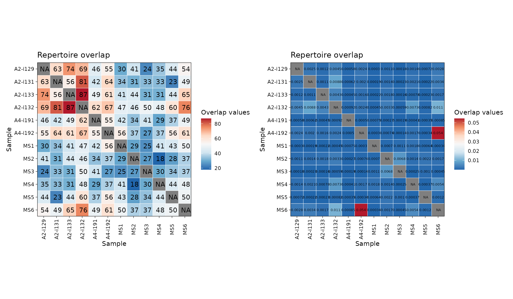
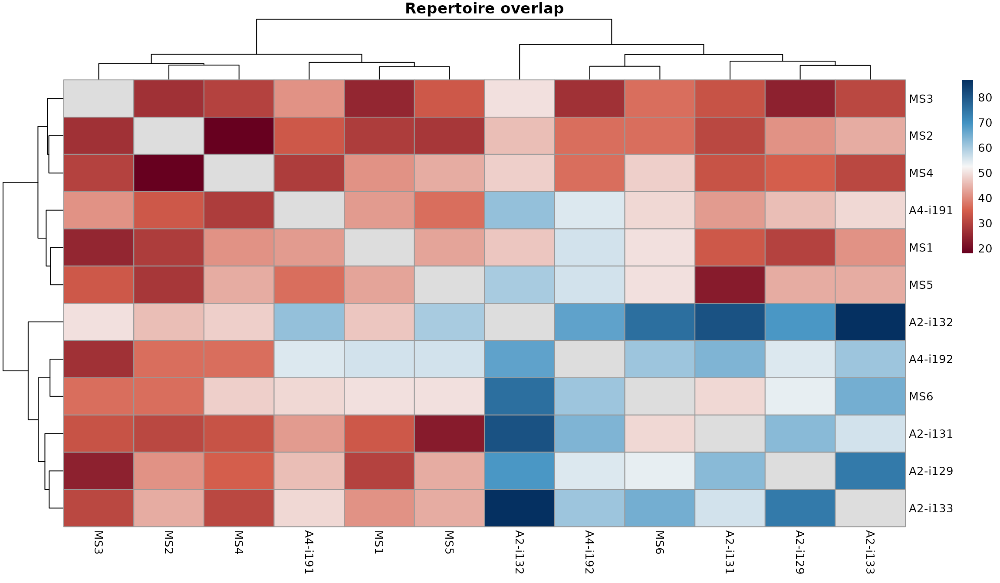
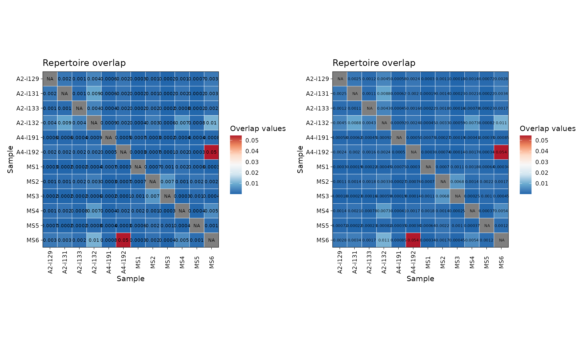
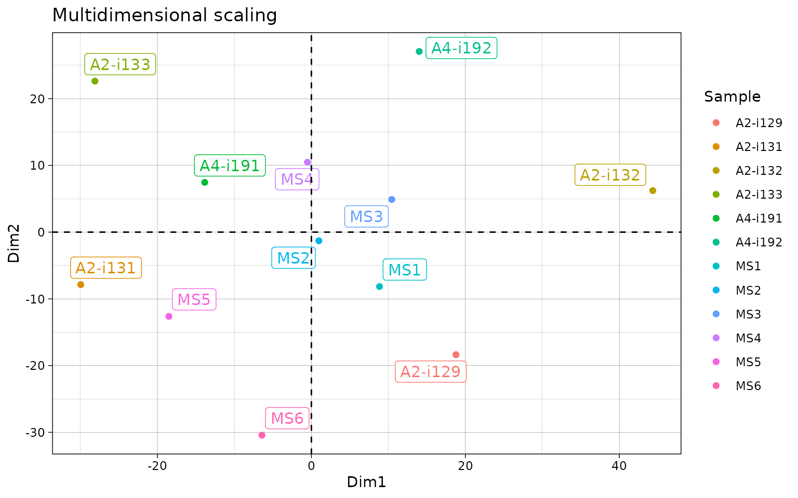
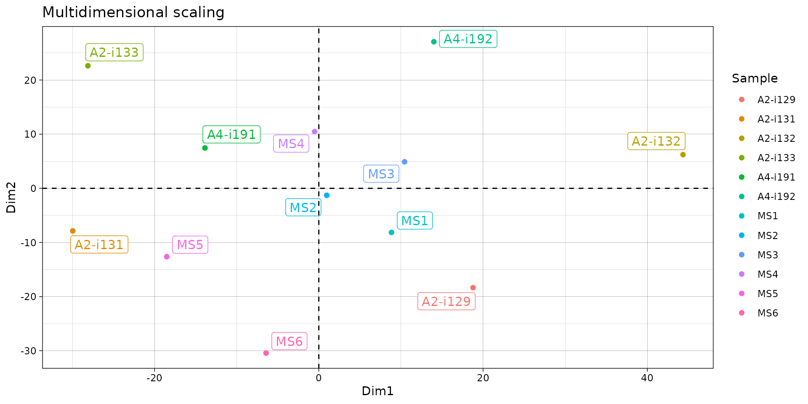
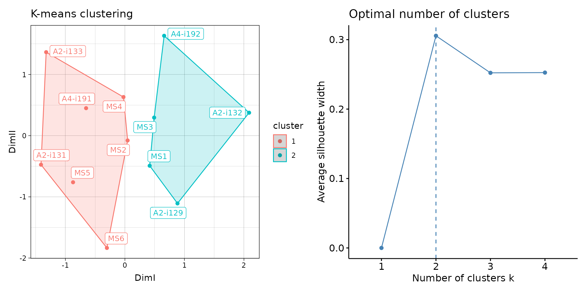

Repertoire overlap and public clonotypes
ImmunoMind – improving design of T-cell therapies using multi-omics and AI. Research and biopharma partnerships, more details: immunomind.io
support@immunomind.io
Source:vignettes/web_only_v0/v4_overlap.Rmd
v4_overlap.RmdRepertoire overlap
Repertoire overlap is the most common approach to measure repertoire
similarity. It is achieved by computation of specific statistics on
clonotypes shared between given repertoires, also called “public”
clonotypes. immunarch provides several indices: - number of
public clonotypes (.method = "public") - a classic measure
of overlap similarity.
overlap coefficient (
.method = "overlap") - a normalised measure of overlap similarity. It is defined as the size of the intersection divided by the smaller of the size of the two sets.Jaccard index (
.method = "jaccard") - measures the similarity between finite sample sets, and is defined as the size of the intersection divided by the size of the union of the sample sets.Tversky index (
.method = "tversky") - an asymmetric similarity measure on sets that compares a variant to a prototype. If using default arguments, it’s similar to Dice’s coefficient.cosine similarity (
.method = "cosine") - a measure of similarity between two non-zero vectorsMorisita’s overlap index (
.method = "morisita") - a statistical measure of dispersion of individuals in a population. It is used to compare overlap among samples.incremental overlap - overlaps of the N most abundant clonotypes with incrementally growing N (
.method = "inc+METHOD", e.g.,"inc+public"or"inc+morisita").
The function that includes described methods is
repOverlap. Again, the output is easily visualised when
passed to vis() function that does all the work:
imm_ov1 <- repOverlap(immdata$data, .method = "public", .verbose = F)
imm_ov2 <- repOverlap(immdata$data, .method = "morisita", .verbose = F)
p1 <- vis(imm_ov1)
p2 <- vis(imm_ov2, .text.size = 2)
p1 + p2
vis(imm_ov1, "heatmap2")
You can easily change the number of significant digits:
p1 <- vis(imm_ov2, .text.size = 2.5, .signif.digits = 1)
p2 <- vis(imm_ov2, .text.size = 2, .signif.digits = 2)
p1 + p2
To analyse the computed overlap measures function apply
repOverlapAnalysis.
# Apply different analysis algorithms to the matrix of public clonotypes:
# "mds" - Multi-dimensional Scaling
repOverlapAnalysis(imm_ov1, "mds")## Standard deviations (1, .., p=4):
## [1] 0 0 0 0
##
## Rotation (n x k) = (12 x 2):
## [,1] [,2]
## A2-i129 18.7767715 -18.360817
## A2-i131 -29.9586985 -7.870441
## A2-i133 -28.1148594 22.629093
## A2-i132 44.3435640 6.221812
## A4-i191 -13.8586515 7.452149
## A4-i192 14.0065477 27.068830
## MS1 8.8469009 -8.151574
## MS2 0.9712073 -1.297017
## MS3 10.4398629 4.894354
## MS4 -0.5131505 10.471309
## MS5 -18.5153823 -12.628029
## MS6 -6.4241122 -30.429669
# "tsne" - t-Stochastic Neighbor Embedding
repOverlapAnalysis(imm_ov1, "tsne")## DimI DimII
## A2-i129 -19.114598 -167.18714
## A2-i131 537.802219 416.46583
## A2-i133 -104.058395 -14.12119
## A2-i132 -246.070113 -85.05854
## A4-i191 -211.091968 29.77542
## A4-i192 55.556464 -162.74795
## MS1 11.636618 -92.01072
## MS2 -208.509752 -52.12419
## MS3 1.357906 -142.37759
## MS4 -198.569845 -20.19550
## MS5 507.982614 423.03316
## MS6 -126.921150 -133.45159
## attr(,"class")
## [1] "immunr_tsne" "matrix" "array"
# Visualise the results
repOverlapAnalysis(imm_ov1, "mds") %>% vis()
# Apply different analysis algorithms to the matrix of public clonotypes:
# "mds" - Multi-dimensional Scaling
repOverlapAnalysis(imm_ov1, "mds")## Standard deviations (1, .., p=4):
## [1] 0 0 0 0
##
## Rotation (n x k) = (12 x 2):
## [,1] [,2]
## A2-i129 18.7767715 -18.360817
## A2-i131 -29.9586985 -7.870441
## A2-i133 -28.1148594 22.629093
## A2-i132 44.3435640 6.221812
## A4-i191 -13.8586515 7.452149
## A4-i192 14.0065477 27.068830
## MS1 8.8469009 -8.151574
## MS2 0.9712073 -1.297017
## MS3 10.4398629 4.894354
## MS4 -0.5131505 10.471309
## MS5 -18.5153823 -12.628029
## MS6 -6.4241122 -30.429669
# "tsne" - t-Stochastic Neighbor Embedding
repOverlapAnalysis(imm_ov1, "tsne")## DimI DimII
## A2-i129 26.32524 6.429606
## A2-i131 -144.49709 -241.995123
## A2-i133 15.67059 47.015332
## A2-i132 13.63028 82.041968
## A4-i191 44.23155 87.554131
## A4-i192 38.88944 18.866932
## MS1 14.62390 20.195187
## MS2 25.88140 79.012170
## MS3 26.64503 14.737601
## MS4 33.83457 80.189530
## MS5 -137.06576 -243.242911
## MS6 41.83085 49.195576
## attr(,"class")
## [1] "immunr_tsne" "matrix" "array"
# Visualise the results
repOverlapAnalysis(imm_ov1, "mds") %>% vis()
# Clusterise the MDS resulting components using K-means
repOverlapAnalysis(imm_ov1, "mds+kmeans") %>% vis()
Public repertoire
In order to build a massive table with all clonotypes from the list
of repertoires use the pubRep function.
# Pass "nt" as the second parameter to build the public repertoire table using CDR3 nucleotide sequences
pr.nt <- pubRep(immdata$data, "nt", .verbose = F)
pr.nt## CDR3.nt Samples A2-i129
## <char> <num> <num>
## 1: TGCGCCAGCAGCTTGGAAGAGACCCAGTACTTC 8 1
## 2: TGTGCCAGCAGCTTCCAAGAGACCCAGTACTTC 7 NA
## 3: TGTGCCAGCAGTTACCAAGAGACCCAGTACTTC 7 1
## 4: TGCGCCAGCAGCTTCCAAGAGACCCAGTACTTC 6 2
## 5: TGTGCCAGCAGCCAAGAGACCCAGTACTTC 6 4
## ---
## 75101: TGTGCTTCACAACTCTTATTGGACGAGACCCAGTACTTC 1 NA
## 75102: TGTGCTTCACAAGCCCTACAGGGCACTTTCCATAATTCACCCCTCCACTTT 1 NA
## 75103: TGTGCTTCAGGGCGGGCCTACGAGCAGTACTTC 1 NA
## 75104: TGTGCTTCCGCCGGACCGGACCGGGAGACCCAGTACTTC 1 NA
## 75105: TGTGCTTGCGGGACAGATAACTATGGCTACACCTTC 1 NA
## A2-i131 A2-i133 A2-i132 A4-i191 A4-i192 MS1 MS2 MS3 MS4 MS5
## <num> <num> <num> <num> <num> <num> <num> <num> <num> <num>
## 1: NA 1 1 NA 1 NA NA 1 1 1
## 2: 1 1 2 1 NA 1 NA NA 2 NA
## 3: 1 1 NA 1 1 1 NA 2 NA NA
## 4: NA 1 1 NA NA NA 1 NA 1 NA
## 5: 2 NA 2 3 1 NA NA NA NA 4
## ---
## 75101: 1 NA NA NA NA NA NA NA NA NA
## 75102: NA NA NA NA NA NA NA NA NA 1
## 75103: NA NA NA NA NA 1 NA NA NA NA
## 75104: NA 1 NA NA NA NA NA NA NA NA
## 75105: NA NA NA NA 1 NA NA NA NA NA
## MS6
## <num>
## 1: 1
## 2: 1
## 3: NA
## 4: 1
## 5: NA
## ---
## 75101: NA
## 75102: NA
## 75103: NA
## 75104: NA
## 75105: NA
# Pass "aa+v" as the second parameter to build the public repertoire table using CDR3 aminoacid sequences and V alleles
# In order to use only CDR3 aminoacid sequences, just pass "aa"
pr.aav <- pubRep(immdata$data, "aa+v", .verbose = F)
pr.aav## CDR3.aa V.name Samples A2-i129 A2-i131 A2-i133 A2-i132
## <char> <char> <num> <num> <num> <num> <num>
## 1: CASSLEETQYF TRBV5-1 8 1 NA 2 1
## 2: CASSDSSGGANEQFF TRBV6-4 6 1 1 2 NA
## 3: CASSFQETQYF TRBV5-1 6 3 NA 1 1
## 4: CASSLGETQYF TRBV12-4 6 2 NA NA 4
## 5: CASSDSGGSYNEQFF TRBV6-4 5 NA NA NA 3
## ---
## 74440: CTSSRPTQGAYEQYF TRBV7-2 1 NA NA NA NA
## 74441: CTSSSRAGAGTDTQYF TRBV7-2 1 NA NA NA NA
## 74442: CTSSYPGLAGLKRKETQYF TRBV7-2 1 NA NA NA 1
## 74443: CTSSYRQRPYQETQYF TRBV7-2 1 NA NA NA NA
## 74444: CTSSYSTSGVGQFF TRBV7-2 1 NA NA NA NA
## A4-i191 A4-i192 MS1 MS2 MS3 MS4 MS5 MS6
## <num> <num> <num> <num> <num> <num> <num> <num>
## 1: NA 2 NA NA 1 1 1 1
## 2: 3 NA NA NA 2 NA NA 12
## 3: NA NA NA 1 NA 1 NA 1
## 4: 3 NA 1 NA NA NA 2 1
## 5: NA 1 1 NA 1 NA NA 1
## ---
## 74440: NA NA NA NA NA NA NA 1
## 74441: NA NA NA NA 1 NA NA NA
## 74442: NA NA NA NA NA NA NA NA
## 74443: NA NA NA NA 1 NA NA NA
## 74444: NA NA NA NA NA 1 NA NA
# You can also pass the ".coding" parameter to filter out all noncoding sequences first:
pr.aav.cod <- pubRep(immdata$data, "aa+v", .coding = T)
# Create a public repertoire with coding-only sequences using both CDR3 amino acid sequences and V genes
pr <- pubRep(immdata$data, "aa+v", .coding = T, .verbose = F)
# Apply the filter subroutine to leave clonotypes presented only in healthy individuals
pr1 <- pubRepFilter(pr, immdata$meta, c(Status = "C"))
# Apply the filter subroutine to leave clonotypes presented only in diseased individuals
pr2 <- pubRepFilter(pr, immdata$meta, c(Status = "MS"))
# Divide one by another
pr3 <- pubRepApply(pr1, pr2)
# Plot it
p <- ggplot() +
geom_jitter(aes(x = "Treatment", y = Result), data = pr3)
p